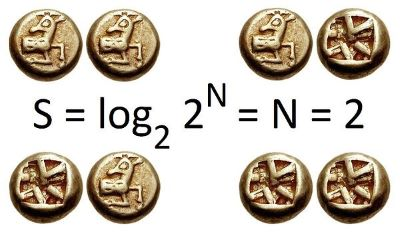
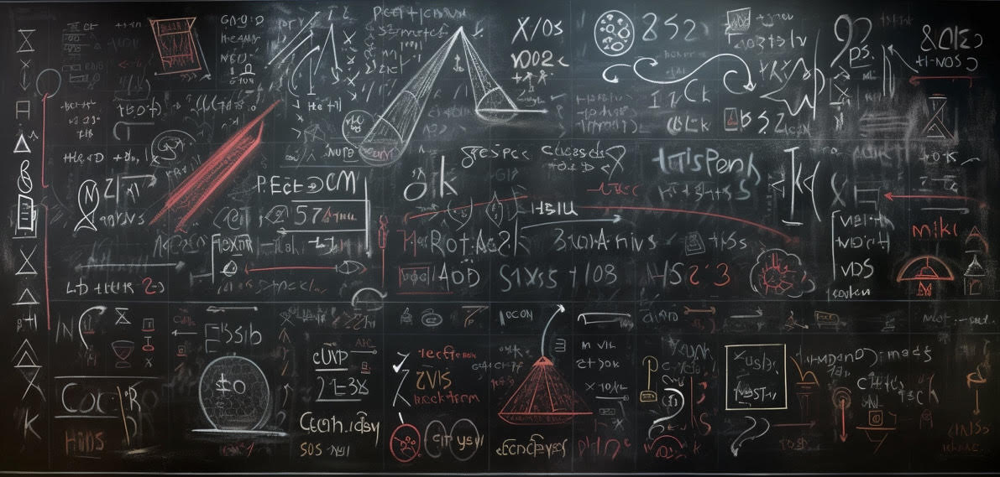

그냥 또 하나의 경제학책?
도메인을 도메인 답게!
인스톨이 필요 없는 주피터 노트북!
마지막으로 정리해봅시다!

섀넌 엔트로피를 슬쩍 본다.
역설을 수학적으로 풀어보자
나 놈을 위한 RSA 정리
Tiny\(\rm\TeX\)으로 모든 OS에서 쉽게!
winget으로 일관되게 쓰자
Quarto로 편하게!

칸토어의 정리를 증명해 보자.
어떤 변인을 고려하지 말아야 할까?
펭귄의 부리로 직접 계산해보자.
만일 당신의 표본 크기가 충분하다면…
기본 용어 정리한다.
Confounder, Collider, Simpson’s and Berkson’s Paradox
이보다 더 좋을 수 있을까?
거시 경제의 트릴레마와 스테이블 코인의 트릴레마
Quarto로 블로그를
markdown으로 이력서를 만들어보자.
GDP 항등식을 오해하지 말자
모든 플랫폼에서 git과 github 잘 쓰기
Docker의 대안으로 K8s를 써보자!
브라우저에서 python을 돌린다굽쇼?
Docker Desktop 없이 WSL에서 Podman으로 콘테이너를 써보자
빌드할 때 Jupyter의 한글 문제도 같이 해결하자!
Python, Julia, R을 하나의 도구로 코딩하자.
아이겐 공간을 이해하자.
아이겐 공간을 이해보자.
두서 없이 정리
Matrix as Linear Transformation
벡터 공간의 기하적 특성
프로젝션과 거리 측정에 관해 알아보자.
로그 선형 모델의 베타를 어떻게 볼까?
코드 셰어링, 이제 걱정 끝
\(\rm\LaTeX\)을 다시 써볼까?
윈도 터미널 잘 쓰기
컨테이너 안에서도 한글을 써보자
문과생이 도커를 쓰는 법
MCMC 기억 되살리기
이항 분류 지표 정리합니다.
wsl 2의 열기를 느껴보아요!
이제는 쓰지 않는 낡은 내용입니다…
미국 대졸자와 비대졸자의 투자 행태에 따른 부의 불평등
마르코프 체인에서 페이지랭크를 보다.
페론-프로베니우스 정리 살펴보기
고유치와 고유벡터에 관해 알아보자.
로지스틱 회귀를 이해해봅시다!
회귀 분석, 기하학적으로 한 방에 깨우치기
기하학적으로 내적을 살펴보자.
이항 분포의 관점에서 푸아송 분포 이해하기
PCA의 수학적 이해
SVM의 수학